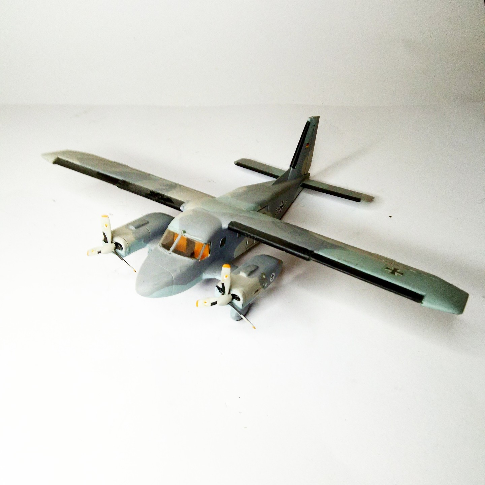

Aerei · scale model archive
Dornier Do.28 D2
Dornier Do.28 D2 — Kit: Matchbox, Scale: 1/72. Marinefliegergeschwader 5 Bundesmarine Kiel 1985 Interesting aerodynamic concept with cantilever wings and…

Photo gallery
English description
Marinefliegergeschwader 5 Bundesmarine Kiel 1985
Interesting aerodynamic concept with cantilever wings and engines!
#1/72 #Matchbox
Descrizione italiana
Marinefliegergeschwader 5 Bundesmarine Kiel 1985.
Interessante aerodynamic concetto con cantilever ali e motores!